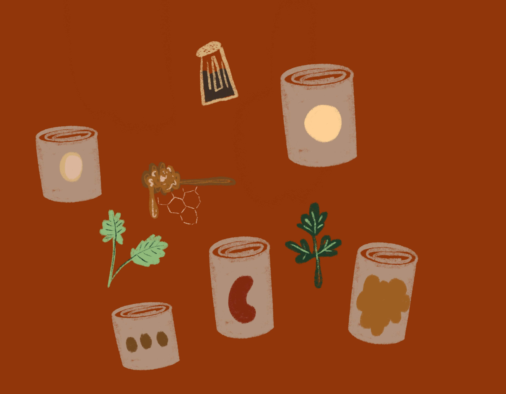
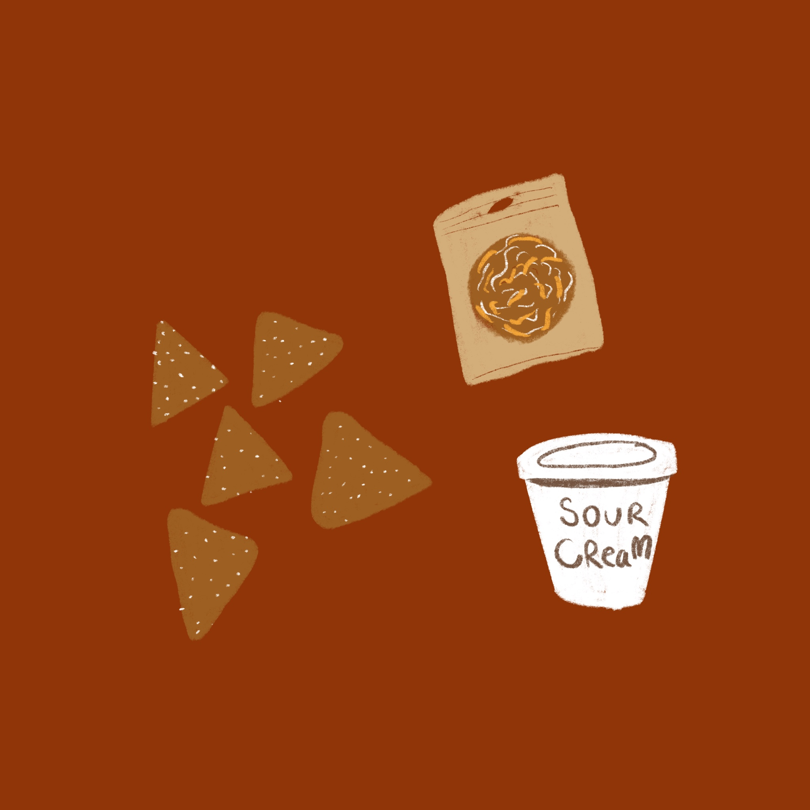
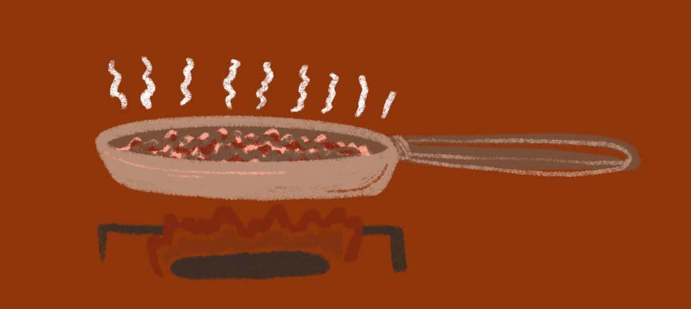
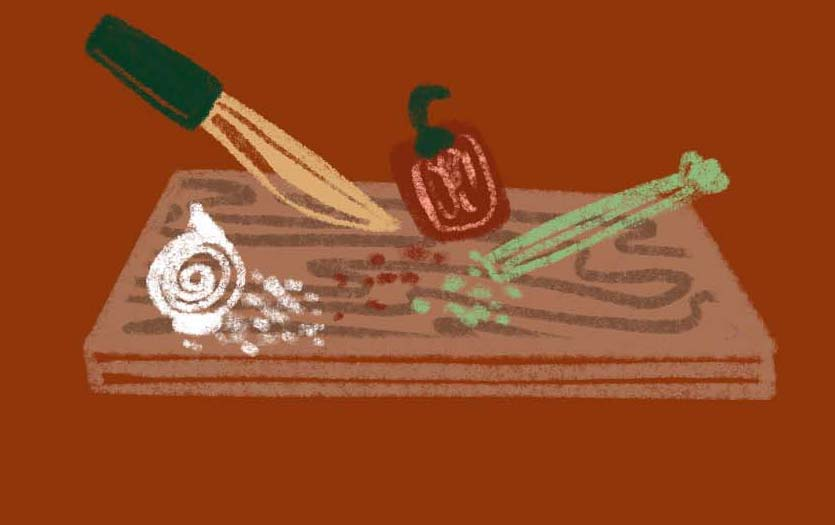
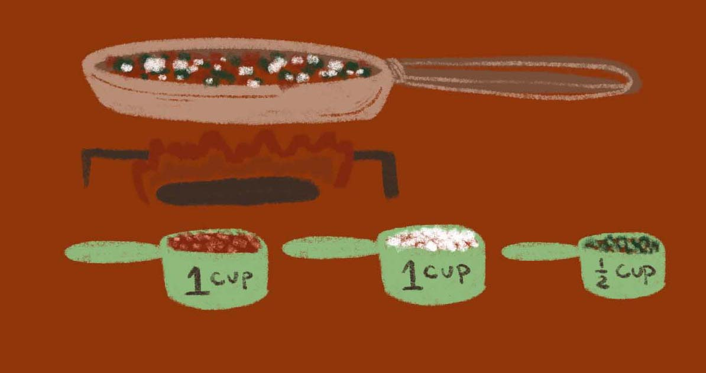
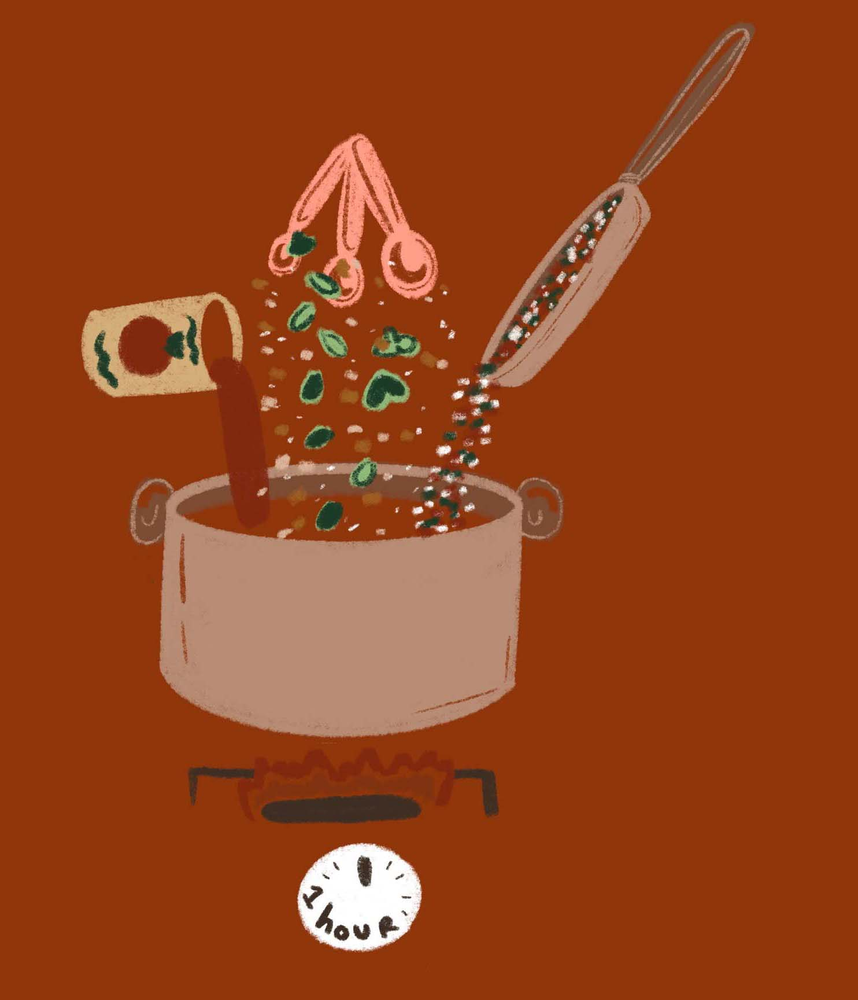
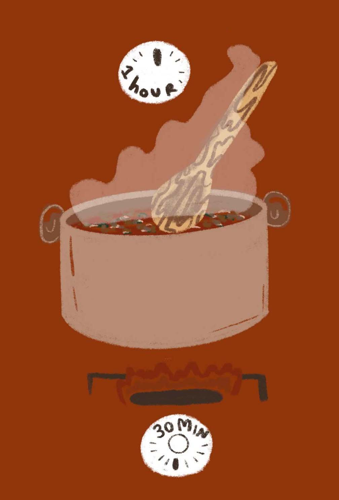
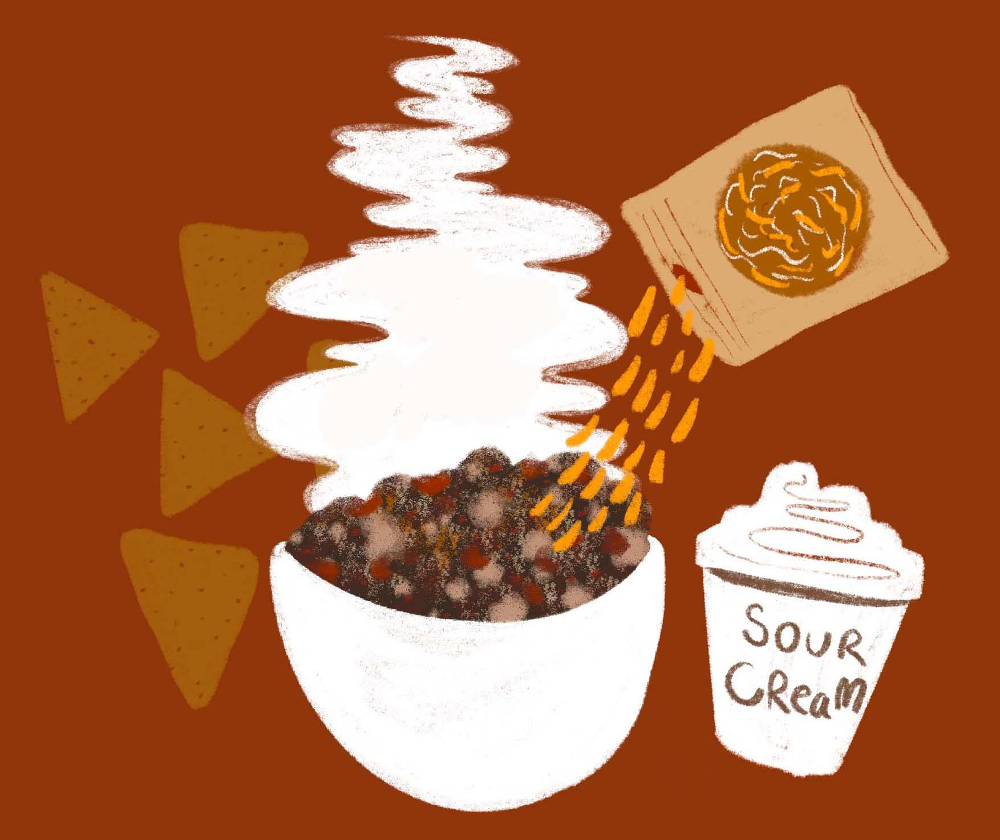

INGREDIENTS
Sautee Ingredients
1/2lb ground sirloin
Tommy Tip: Use ground turkey, or plant based crumbles!
2 cups Chopped Onion
1 cup Chopped Red Pepper
1/2 cup Chopped Celery

Stewed Ingredients
3 28 ounce Stew Tomato
Tommy Tip: Del Monte is Best!
1 tablespoon Salt
1 teaspoon Basil
1 teaspoon Oregano
1 tablespoon minced garlic
1 teaspoon cumin

Simmer Ingredients
1 1/2 tablespoon Honey
1/2 teaspoon Black Pepper
1/2 tablespoon Parsely Flakes
1/2 tablespoon Cilantro Flakes
1 15oz can Butter Beans
1 15 oz can Kidney Beans
1 15 oz can Pinto Beans
1 15 oz can Baked Beans
1 15 oz can Black Beans
Tommy Tip: Busch Beans are Best!

Optional Ingredients
Tortilla Chips
Sour Cream
Cheese
INSTRUCTIONS
1.

Fry ground sirloin in frying pan, then chop and set aside. Save juice in pan!
2.

While Frying Sirloin, dice onions, peppers, and celery.
3.

Fry vegetables in sirloin Juice on very low heat about 15 minutes till tender.
4.

In very large pot add stewed ingredients: stewed tomatoes, pepper, salt, basil, oregano, garlic, cumin, sauteed veggies. Cook on low for one hour stirring occassionally. Keep lid on.
5.

Mix in Ground Sirloin, all Simmer Ingredients: beans, black pepper, honey, parsely, cilantro. Cook on low for 30 minute stirring occasionally.
6.

Serve warm with Tortilla chips, sourcream, cheese or your favorite fixins! Now go enjoy!
Tommy Tip: Do not fear left overs! Portion out and freeze in ziplocks layed flat for easy storage! Run under hot water and reheat for an easy meal!